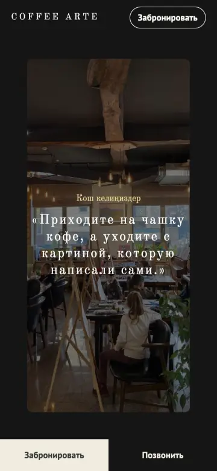
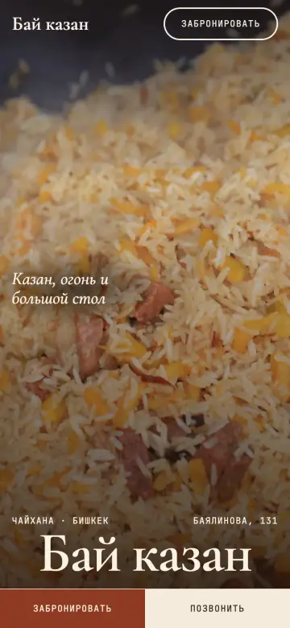
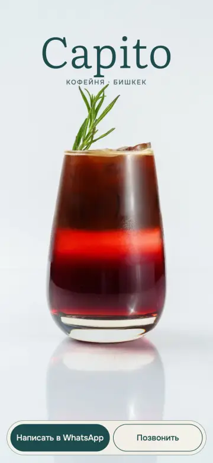
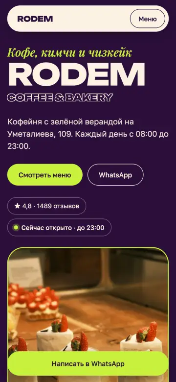
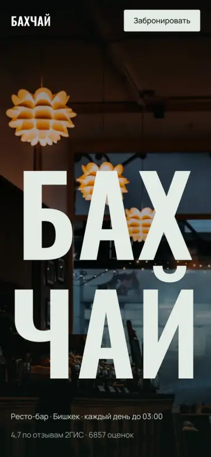

Концепты сайтов
Пять одностраничных сайтов в разных стилях. Откройте на телефоне — все сделаны в первую очередь под мобильные, без сторонних сервисов, быстро грузятся.

Coffee Arte
Тёмный редакционный стиль, анимация при прокрутке

Бай казан
Тёплый национальный стиль, крупная антиква

Capito
Светлый и мягкий, один цвет на кремовом

Rodem
Смелый и яркий, фильтр меню, карусель

Бахчай
Тёмный кинематографичный, горизонтальная сцена